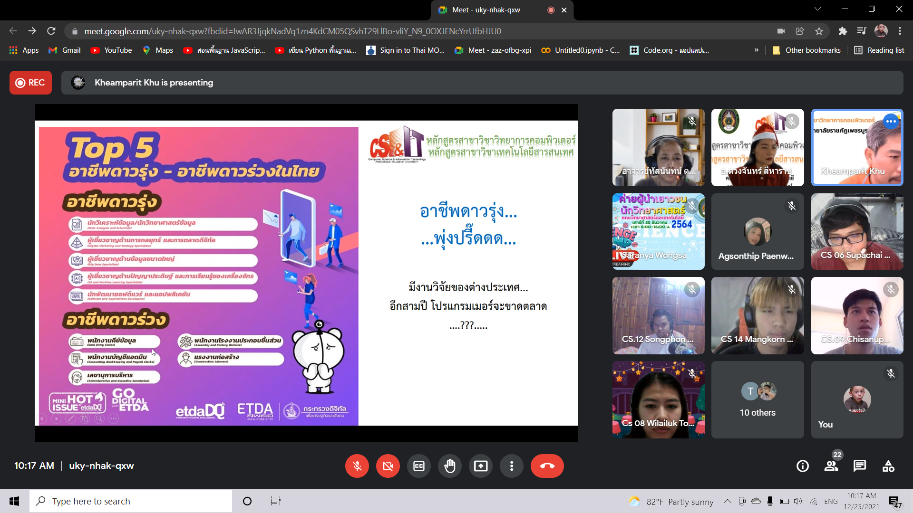

ACTIVITY
ประธานนักเรียน
ได้รับเลือกตั้งให้เป็นประธานนักเรียน จากความไว้วางใจจากคุณครูและเพื่อน
See more
งานวันวาเลนไทน์ Love & Learn
ได้จัดงานวันวาเลนไทน์ Love & Learn ให้กับน้องๆ งานนี้คืองานแรกของสภา ได้ทำงานแบบทีมครั้งแรก และทั้งหมดที่ทำไปเพื่อให้น้องๆ บอกความในใจที่อยากบอกแต่ไม่ได้บอก และมีการส่งของหรือจดหมายให้โดยตรง
See more
สโนบาน
งานสโนบานหรืองานปัจฉิมจัดให้พี่ ม.6 และน้อง ม.3 ก่อนใกล้จะจบ งานนี้เป็นงานครั้งที่สองของสภา เป็นงานที่ต้องแบ่งหน้าที่กันให้ดี เพราะจะมีการควบคุมทั้งรอบเช้า รอบบ่าย และการจัดคิวให้กับพี่ๆน้องๆ
See more
AYS ROV E-sport
ได้เป็นหัวหน้างานในการจัดงานเกมการแข่งขันแบบออนไลน์ ทำหน้าที่ออกแบบโปสเตอร์ ควบคุมสตรีม พากย์การแข่งขัน และทำอินโทรงาน
See more
Tiktok
เป็นส่วนหนึ่งที่เป็นทีมงานในการดูแลน้องๆที่เข้ามาสมัคร การให้คะแนน
See more
Debate | student council Ayutthaya nusorn school
เป็นหัวหน้างานในการจัดตั้งงานดีเบตว่าที่ประธานนักเรียน ทำหน้าที่ออกแบบโปสเตอร์ รวมถึงคุมสตรีม ทำอินโทรของงาน และจัดคิวให้น้องๆ
See more
Activity Math-Science-English-Computer
ค่ายอัจฉริยภาพศิลปากร
ในค่ายนี้จะมีทั้งวิศวะเครื่องกลและธุรกิจวิศวะกรรม ในค่ายจะมีทั้งคุณครูและเพื่อนมากมาย มีกิจกรรม Workshop และหลังจากทำกิจกรรม Workshop จะมีการสอบเนื้อหาที่ได้ทั้งหมด ได้การทำงานเป็นระบบทีมการพรีเซนต์งาน หลักการวางแผนในธุรกิจวิศวกรรม
See more
กิจกรรมห้องเรียนจำลองวิศวกรรมคอมพิวเตอร์
กิจกรรมนี้ผมได้พบกับ วิทยากร พี่มิลล์ - รมย์นลิน กิจเกษตรสถาพร
See more

ค่ายผู้นำวิทยาศาสตร์
ได้เข้าร่วมค่ายผู้นำวิทยาศาสตร์ และได้เรียนรู้เกี่ยวกับวิทยาการคอมพิวเตอร์ อาชีพหลังจากเรียนจบ การนำความรู้ไปปรับใช้ในองค์กรหรือบริษัท
See more
Deskcube
เข้าร่วมกิจกรรม Deskcube และได้รับความรู้ เรื่องการพัฒนาเว็ปไซต์ เทคนิคสำหรับการนำ IT ไปประยุกต์ใช้ในชีวิตประจำวัน การทำรูปแบบ Website และData กับการศึกษาและงานในอนาคต
See more
Inspire IT65
สิ่งที่ได้หลังจากเข้าร่วมกิจกรรม Inspire IT65 คือการเขียนภาษา Python อาชีพของนักโปรแกรมเมอร์และสายData ในสายนี้มีวิชาเรียนอะไรบ้าง และควรเตรียมตัวยังไง
See more
Basic HTML CSS ss1
เข้าร่วมการฝึกพัฒนาการเขียนโค้ดแบบ Website โดยใช้ภาษา HTML CSS เพื่อพัฒนาฝืมือ และนำไปประยุกต์ใช้ในชีวิตประจำวัน ในการเขียน Website เพื่อแนะนำตนเอง
See more
Schoology ปลุกฝันปั้น...วิศวะ
ได้เข้าร่วมค่าย Schoology ปลุกฝันปั้น...วิศวะ สิ่งที่ได้จากค่าย การแนะแนวสาขาของคณะวิศวกรรมศาสตร์ การรับมือกับวิชาเรียนของแต่ละสาขา และการติว PAT1 และ PAT3
See more
โครงการติวเตรียม วิศวะ ss2
เข้าร่วมโครงการติวเตรียมวิศวะ ได้เรียนรู้การทำหุ่นยนต์โดยใช้บอร์ด Arduino และอุปกรณ์เสริมต่างๆ มีการแนะแนวคณะวิศวกรรมศาสตร์และสาขาต่างๆจากพี่ๆ
See more
Talented English camp 2019
เข้าร่วมค่ายกลุ่มสาระต่างประเทศ ที่ท่าชัยโฮมเสตย์ จังหวัดนครนายก
See more
English Day Camp 2020
เข้าร่วมกิจกรรม English Day Camp 2020 ได้ทำกิจกรรมที่โรงเรียน มีคณะวิทยากรต่งประเทศมาให้ความรู้ มีกิจกรรมที่ใช้กระบวนการกลุ่มเป็นหลัก และได้พัฒนาการใช้ภาษาในการสื่อสาร ทางด้านภาษาอังกฤษ
See more
English Day Camp 2021
เข้าร่วมกิจกรรม English Day Camp 2021 ได้ทำกิจกรรมที่โรงเรียน
See more
PIM English Fit Camp Online
เข้าร่วมการฝึกใช้ภาษาอังกฤษ หลักไวยากรณ์ แกรมมาร์ กับวิทยากร
See more